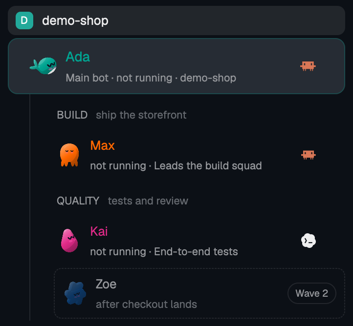

Team mode (DSH)
The Bot team on DeepSeek Harness: long-lived Bots with their own name, role, model and memory, group chats, schedules and the Bot browser.
Meet the Bot teamAutomagik
Superintelligence, in open building blocks. Use one, or all of them.
Mac with Apple silicon, macOS 13 or newer. Linux on a 64-bit PC. Windows is not supported yet.
This repository, Genie and Omni are free and open source, Apache-2.0. Cloud is a private, paid service; its contracts are public.

Recorded from the real app, with a fictional Northwind project and scripted replies. The commands, commits and file changes are real; the timings are not a real model’s. Capture notes
The film

The team launching Automagik, at work. The launch film follows that team inside Automagik; its cut is being prepared for the owner’s review.
Open building blocks
Each part is usable on its own once it ships. Bring the blocks that fit your work.
The Bot team on DeepSeek Harness: long-lived Bots with their own name, role, model and memory, group chats, schedules and the Bot browser.
Meet the Bot teamYour code agents in the real Herdr window with the Automagik pack; nothing in Herdr is rebuilt.
Code mode needs Herdr and the Automagik pack. The app download alone does not set it up.
Install Herdr and the packA wish becomes a branch, a test run and a report you approve; genie desktop opens it on the team.
The service that links your chat apps to Automagik, with its channels and canvases in the same window.
Connect with OmniYour coding agents on your Android phone, paired to your own machines.
Take Pocket alongusagemeter, the Rust token meter that records usage and cost on the machine and answers usagemeter query.
One sign-in, organisations and hosted workspaces, with a rail that opens each.
Cloud is designed and accepted, and is not live. When it ships it is a private, paid hosted service: not free and not open source. Only its contracts are public.
Read the Cloud designIn your window
Your Main Bot leads the team. Give each Bot its own name, role, instructions, model and look. Talk together in group chats, or hand a coding request to Genie.
The app’s switch still says Work. This capture shows Genie’s report from the scripted Northwind scenario; nothing was pushed or merged.

The real Herdr window, with the Automagik pack. Your project’s Main Bot and its team sit beside your coding agents.
Code mode needs Herdr and the pack; the app download alone does not set it up.
Set up Code mode
You stay in charge
Connect the AI account you already have, or an API key from a provider you use. Each Bot runs on the model you give it.
The team’s files live in your computer’s .automagik folder. Bots keep notes across conversations; groups and the team have their own memory. What Bots read and write goes to your connected AI provider, under its terms.
When a Bot needs a key, token or password, it asks with a card in its chat. You type the value; the Bot never sees it.
It asks before sending as you to a person, deleting something or disconnecting a channel. Main and Omni Bots can read chats and post to groups, WhatsApp channels and your own chat without asking. Other Bots ask for chat access; an Always grant lets them post to that group again.
These are the corrected approval rules, with their exceptions. Read the app guide.
Get acquainted
An Omni and an AI account are things to connect when you are ready. Both can wait.
Open Automagik and follow the welcome. Make your companion and choose who comes along.
Link an Omni to bring your chat channels into the same window.
Sign in to your AI account or bring an API key, and start talking to your Main Bot.
Apple silicon · macOS 13 or newer
Download for Mac64-bit PC · Ubuntu or Debian
Download for Linuxsudo apt install ./Automagik-Linux.deb.On another Linux, use the AppImage.
Windows is not supported yet. Code mode installs separately and needs Herdr and the Automagik pack.
Made by this team
This page started as a Genie’s draft, in a group chat with the rest of the launch team, inside Automagik.